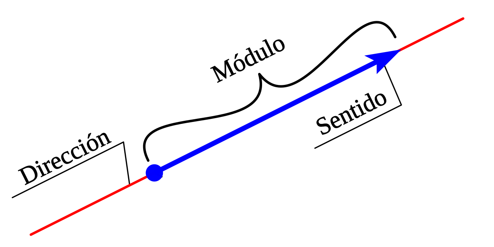
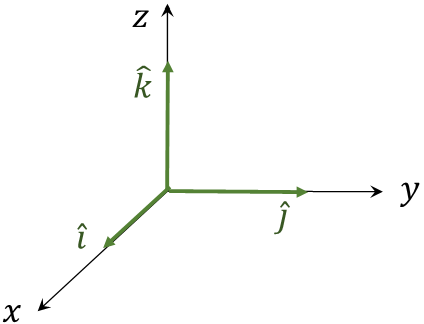

Introducción a Vectores
¿Qué es un vector?
Definición
Un vector es un objeto matemático que tiene magnitud (o norma o módulo) , dirección y sentido. Solo es identificado por estos tres atributos.

Para cálcular la magnitud
La magnitud de un vector se calcula con la siguiente fórmula:
Para 2 dimensiones
\[ |\vec{a}| = \sqrt{a_x^2 + a_y^2 } \]
Para 3 dimensiones
\[ |\vec{a}| = \sqrt{a_x^2 + a_y^2 + a_z^2 } \]
Para N dimensiones
\[ |\vec{a}| = \sqrt{a_1^2 + a_2^2 + a_3^2 + \ldots + a_n^2 } \]
¿Cúal es la diferencia entre estos vectores?
¿Y estos?
¿Qué tienen en común?
Componentes de un vector
Multiplicación por un escalar
Suma de 2 vectores
Ejemplo visual
Suma de 3 vectores
Ejemplo visual
Vectores unitarios
Es un vector que tiene magnitud igual a 1 y, usualmente, se utiliza para describir la dirección de un vector. Se calcula de la siguiente forma:
\[ \hat{a} = \frac{\vec{a}}{|\vec{a}|} \]
Vectores unitarios canónicos

Encontrar un vector conociendo 2 puntos
Para encontrar un vector que empieza en el punto A y termina en el punto B, se puede utilizar la siguiente fórmula:
\[ \vec{v} = B - A \]
Ejercicio 1
Calcule el módulo y dirección de los siguientes vectores. Expresar la dirección en vectores unitarios.
a)
\[ -10 \hat{ı} + 30 \hat{ı} = 20 \hat{ı} \hspace{1 em} [N]\]
Dıreccıón: \(+ \hat{ı}\)
b)
\[ 10 \hat{ı} + 30 \hat{ı} = 40 \hat{ı} \hspace{1 em} [N]\]
Dıreccıón: \(+ \hat{ı}\)
c)
\[ -20 \hat{ı} - 40 \hat{ı} = -60 \hat{ı} \hspace{1 em} [N]\] Dıreccıón: \(- \hat{ı}\)
d)
\[ 70 \hat{ȷ} - 4 \text{kg} \cdot 9.8 \left [\frac{m}{s^2}\right ] \hat{ȷ} = 30 \hat{ȷ} \hspace{1 em} [N]\] \[ 70 \hat{ȷ} - 4 \cdot 9.8 \hat{ȷ} = 30 \hat{ȷ} \hspace{1 em} [N]\] \[ 70 \hat{ȷ} - 39.2 \hat{ȷ} = 30.8 \hat{ȷ} \hspace{1 em} [N]\] Dıreccıón: \(+ \hat{ȷ}\)
Ejercicio 2
Dado los siguientes puntos en el espacio \(P(5,-4,-3)\); \(Q(-3,5,5)\) y \(R(-1,-4,3)\), coordenadas que están expresadas en metros. Determinar los vectores que van del punto R al punto P y del punto P al punto Q.
De R a P
\[ \vec{A} = P - R = (5,-4,-3) - (-1,-4,3) = (5+1,-4+4,-3-3) = (6,0,-6) \hspace{1 em} [m] \]
De P a Q
\[ \vec{B} = Q - P = (-3,5,5) - (5,-4,-3) = (-3-5,5+4,5+3) = (-8,9,8) \hspace{1 em} [m] \]
¿Cómo se escribirian estos vectores en términos de vectores unitarios canónicos?
\[ \vec{A} = 6 \hat{ı} + 0 \hat{ȷ} - 6 \hat{k} \hspace{1 em} [m] \]
\[ \vec{B} = -8 \hat{ı} + 9 \hat{ȷ} + 8 \hat{k} \hspace{1 em} [m] \]
¿Cual es el módulo de estos vectores?
\[ |\vec{A}| = \sqrt{6^2 + 0^2 + (-6)^2} = \sqrt{36 + 0 + 36} = \sqrt{72} = 8.49 \hspace{1 em} [m] \]
\[ |\vec{B}| = \sqrt{(-8)^2 + 9^2 + 8^2} = \sqrt{64 + 81 + 64} = \sqrt{209} = 14.45 \hspace{1 em} [m] \]
¿Cómo sacariamos su vector unitario?
\[ \hat{A} = \frac{\vec{A}}{|\vec{A}|} = \frac{6 \hat{ı} + 0 \hat{ȷ} - 6 \hat{k}}{8.49} = \frac{6}{8.49} \hat{ı} + \frac{0}{8.49} \hat{ȷ} - \frac{6}{8.49} \hat{k} = 0.71 \hat{ı} + 0 \hat{ȷ} - 0.71 \hat{k} \]
\[ \hat{B} = \frac{\vec{B}}{|\vec{B}|} = \frac{-8 \hat{ı} + 9 \hat{ȷ} + 8 \hat{k}}{14.45} = \frac{-8}{14.45} \hat{ı} + \frac{9}{14.45} \hat{ȷ} + \frac{8}{14.45} \hat{k} = -0.55 \hat{ı} + 0.62 \hat{ȷ} + 0.55 \hat{k} \]
Ejercicio 3
Calcula el módulo del vector resultante de la suma de los siguientes vectores:
Tenemos un vector \(\vec{A}\) diagonal, por lo que tenemos que calcular sus componentes.
\[ \vec{A}_x = A \cos(37) = 10 \cos(37) = 8 \] \[ \vec{A}_y = A \sin(37) = 10 \sin(37) = 6 \]
Por lo que ahora podemos describir a todos los vectores en términos de sus componentes.
\[ \vec{A} = 8 \hat{ı} + 6 \hat{ȷ} \] \[ \vec{B} = -12 \hat{ı} + 0 \hat{ȷ} \] \[ \vec{C} = 0 \hat{ı} - 9 \hat{ȷ} \]
Ahora podemos sumar los vectores:
\[ \vec{R} = \vec{A} + \vec{B} + \vec{C}\] \[ (8 \hat{ı} + 6 \hat{ȷ}) + (-12 \hat{ı} + 0 \hat{ȷ}) + (0 \hat{ı} - 9 \hat{ȷ}) = (8 - 12 + 0) \hat{ı} + (6 + 0 - 9) \hat{ȷ} = -4 \hat{ı} - 3 \hat{ȷ} \] \[ \vec{R} = -4 \hat{ı} - 3 \hat{ȷ} \]
Para calcular el módulo de \(\vec{R}\)
\[ |\vec{R}| = \sqrt{(-4)^2 + (-3)^2} = \sqrt{16 + 9} = \sqrt{25} = 5 \]
Recursos recomendados
- Video de Armónicos Esfericos
- Capítulo 1, Sección 3 de Física para Ciencias e Ingeniería de Serway
- Simulación de suma de vectores